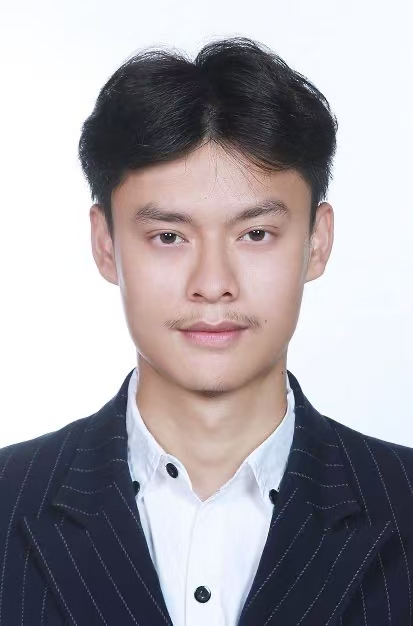

I am a Ph.D. student in Computer Science and Engineering at University of Connecticut (UConn), advised by Prof. Chuxu Zhang.
Before that, I studied for two years at Colorado School of Mines, where I worked as a research and teaching assistant.
I received my Bachelor's degree in Computer Science from Renmin University of China (RUC), under the supervision of Prof. Feng Zhang.
Email: mca25001 [AT] uconn.edu

Journal Reviewer:
ACM Transactions on Intelligent Systems and Technology (ACM TIST)
Transactions on Machine Learning Research (TMLR)
Conference Reviewer:
Resource-efficient Learning for the Web Conference (RelWeb@WWW/SIGKDD 2025)